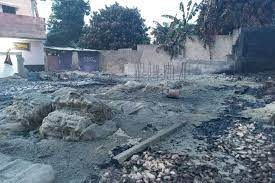
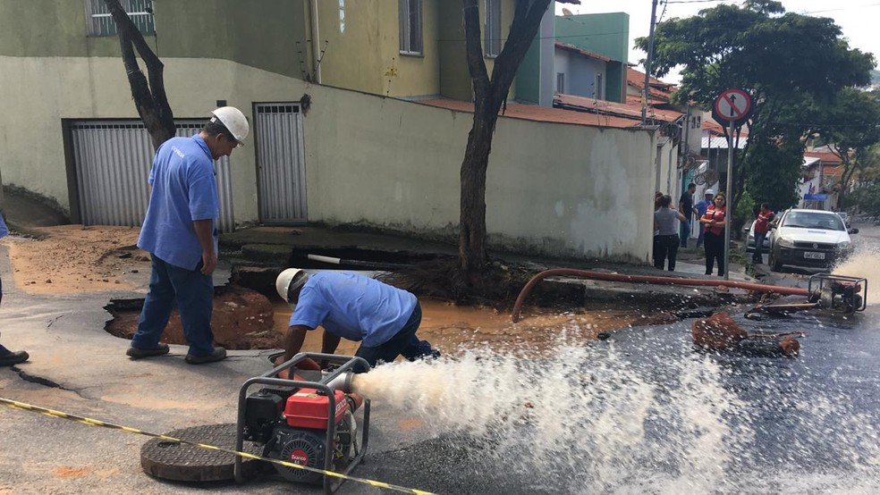
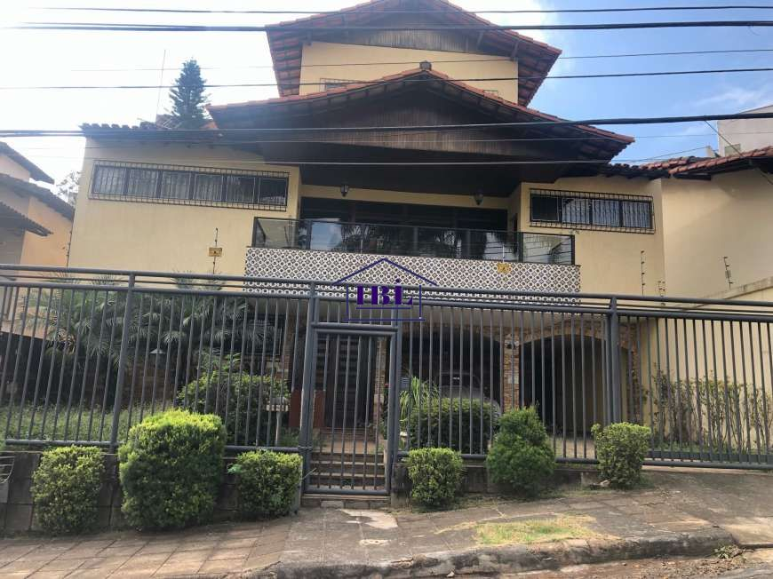

HOJE
Bairro heliópolis, em BH, é invadido por fumaça preta e tóxica de incêndio
Chamas em material plástico entulhado mobilizaram três viaturas do Corpo de Bombeiros na região Norte da capital. (Saiba Mais)
21/05/2021
ATENÇÂO
Vazamento de Heliópolis, BH
Rua de Belo Horizonte vira 'rio' após vazamento em rede de abastecimento. Saiba mais em (Clique Aqui)
27/03/2021
Sobre Heliópolis
Heliópolis é um bairro de classe média e classe média-alta da região administrativa do Norte, no município de Belo Horizonte, em Minas Gerais, no Brasil.[1] Seu principal acesso é feito através da Avenida Cristiano Machado. Em dezembro de 2007, o bairro foi prestigiado com a praça Padre Lage através do Orçamento Participativo da Prefeitura. A praça é um local de lazer e ponto de encontro de namorados. Padre Lage] Tranquilo, o Heliópolis é considerado um bairro dormitório e seus moradores trabalham em outros pontos da cidade. Os pequenos comércios são concentrados na Rua Nair Pentagna, que é a principal do bairro.
16/01/2021
saiba mais em mgcasa.com